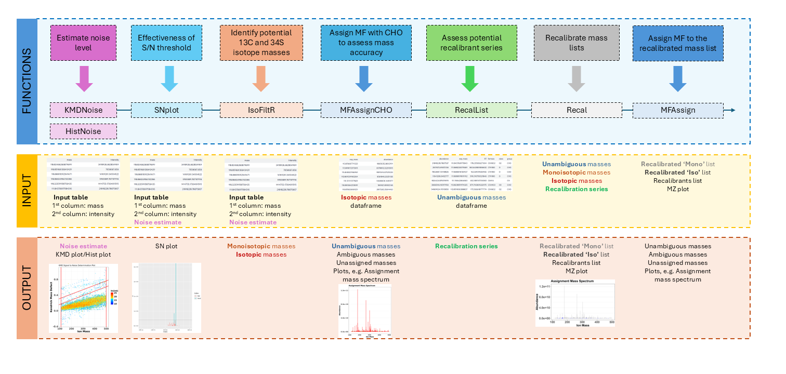
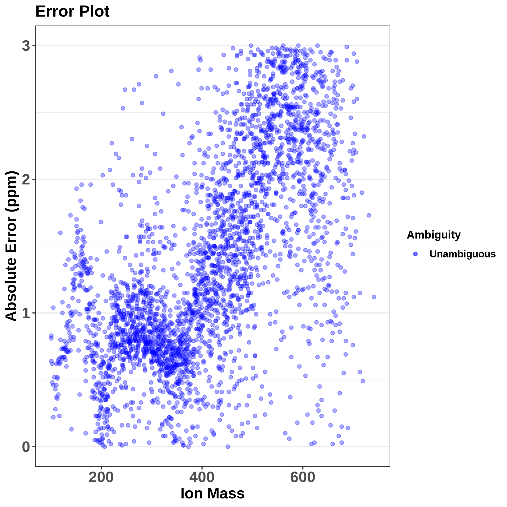
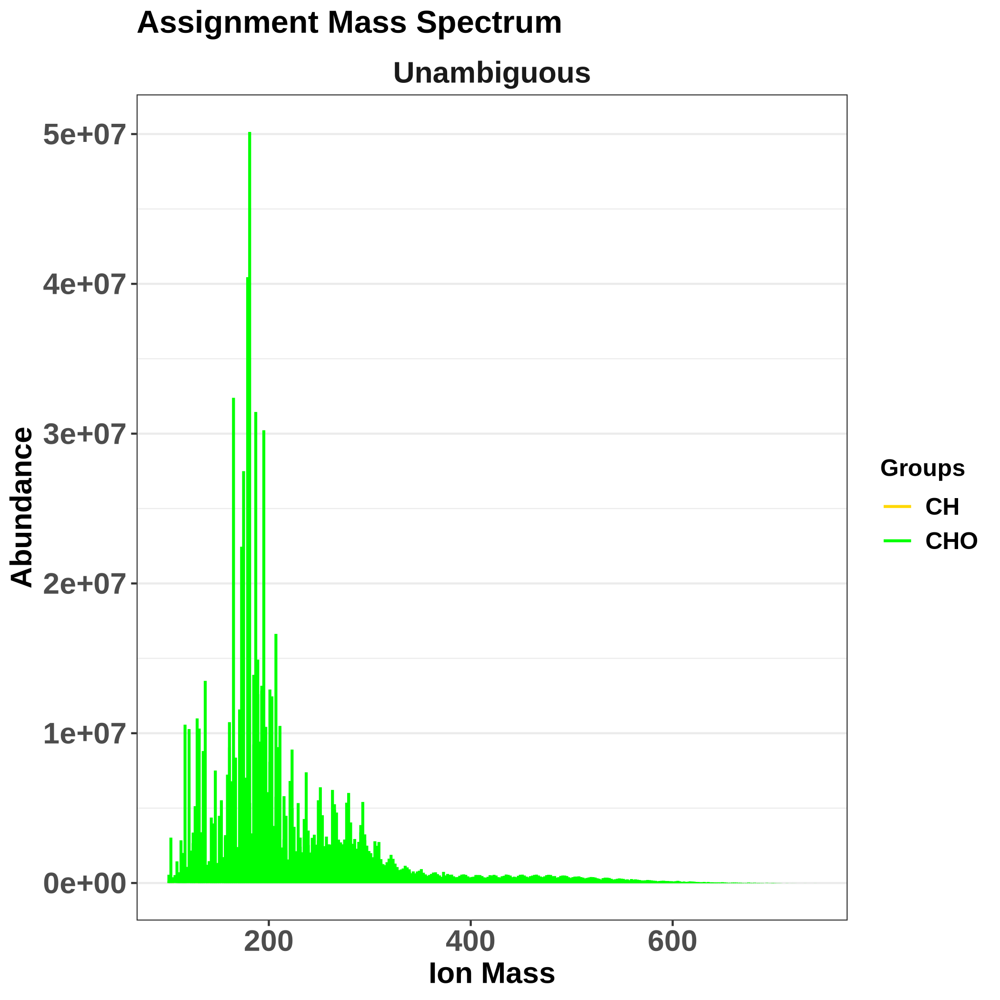
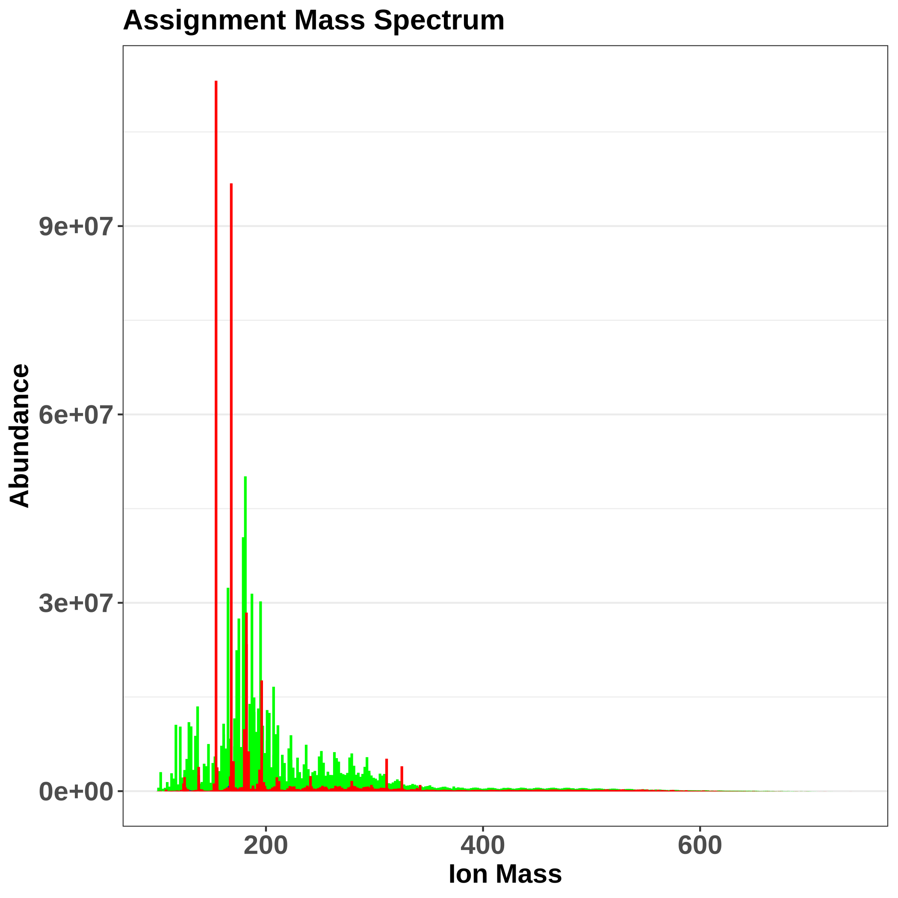

Molecular formula assignment and mass recalibration with MFAssignR package
| Author(s) |
|
| Reviewers |
|
OverviewQuestions:
Objectives:
What are the main steps of untargeted metabolomics LC-MS data pre-processing?
How to annotate small molecules contained in mass spectrometry analyses of complex mixtures using the MFAssignR package?
Requirements:
To learn about the main steps in the pre-processing of untargeted metabolomics LC-MS data.
To try hands-on analysis using the real data.
- Introduction to Galaxy Analyses
- slides Slides: Introduction to Metabolomics
- tutorial Hands-on: Mass spectrometry: LC-MS data processing
Time estimation: 2 hoursLevel: Intermediate IntermediateSupporting Materials:Published: May 19, 2025Last modification: May 19, 2025License: Tutorial Content is licensed under Creative Commons Attribution 4.0 International License. The GTN Framework is licensed under MITpurl PURL: https://gxy.io/GTN:T00535version Revision: 1
This training covers the multi-element molecular formula (MF) assignment using the MFAssignR tool. It was originally developed by Schum et al. 2020 for the analysis of untargeted mass spectrometry data coming from complex environmental mixtures. The package contains several functions including noise assessment, isotope filtering, internal mass recalibration, and formula assignment.
The MFAssignR workflow is composed of several steps:
- Run KMDNoise to determine the noise level for the data.
- Check the effectiveness of the S/N threshold using SNplot.
- Use IsoFiltR to identify potential 13C and 34S isotope masses.
- Using the signal-to-noise (S/N) threshold, and the two data frames output from IsoFiltR(), run MFAssignCHO to assign MF with C, H, and O to assess the mass accuracy.
- Use RecalList to generate a list of the potential recalibrant series.
- Use FindRecalSeries to find the most suitable recalibrant series.
- After choosing recalibrant series, use Recal to recalibrate the mass lists.
- Assign MF to the recalibrated mass list using MFAssign.
- Check the output plots from MFAssign() to evaluate the quality of the assignments.
We can illustrate the workflow also on the following scheme:

Let’s dive now into the individual steps and explain all the inputs, parameter settings, and outputs.
AgendaIn this tutorial, we will cover:
Data import
At the very beginning, we need to import the dataset we will be using. MFAssignR requires on input a table in a tabular format, where:
- the first column is the mass to charge ratio (m/z),
- the second column is intensity,
- the optional third column is retention time.
In our case, we will use the model data from the MFAssignR package, which contains the negative ions from acetonitrile extract of wildfire-influenced atmospheric organic aerosol, collected at the Pacific Northwest National Laboratory (PNNL). The detection m/z range of the instrument was 100-800 and the ions were analyzed by electrospray ionization (ESI) on Orbitrap Elite MS and recorded as Xcalibur.raw files. In the MFAssignR package, this dataset is named Raw_Neg_ML in .rds format, which we saved as a tabular file and we will use this file as our input.
Hands On: Upload data
Create a new history for this tutorial and give it a name.
To create a new history simply click the new-history icon at the top of the history panel:
Import the files from Zenodo:
https://zenodo.org/records/13768009/files/mfassignr_input.txt
- Copy the link location
Click galaxy-upload Upload at the top of the activity panel
- Select galaxy-wf-edit Paste/Fetch Data
Paste the link(s) into the text field
Press Start
- Close the window
As an alternative to uploading the data from a URL or your computer, the files may also have been made available from a shared data library:
- Go into Libraries (left panel)
- Navigate to the correct folder as indicated by your instructor.
- On most Galaxies tutorial data will be provided in a folder named GTN - Material –> Topic Name -> Tutorial Name.
- Select the desired files
- Click on Add to History galaxy-dropdown near the top and select as Datasets from the dropdown menu
In the pop-up window, choose
- “Select history”: the history you want to import the data to (or create a new one)
- Click on Import
Set the format of the dataset to ‘tabular’.
- Click on the galaxy-pencil pencil icon for the dataset to edit its attributes
- In the central panel, click galaxy-chart-select-data Datatypes tab on the top
- In the galaxy-chart-select-data Assign Datatype, select
tabularfrom “New Type” dropdown
- Tip: you can start typing the datatype into the field to filter the dropdown menu
- Click the Save button
We can now view our dataset, and ensure, that it has a correct input format.

{kind=link}
Noise assessment
Having our input data in the workspace, we can now start with the analysis!
The first step is the noise assessment, which allows us to avoid both false positives (if noise is underestimated) and false negatives (if noise is overestimated). For this purpose, we will be using the KMDNoise function, and visualize the result using SNplot function. MFAssignR provides an additional function, HistNoise, but often the data distribution prerequisites are not fulfilled and especially when the analyte signal tapers into the noise, HistNoise fails to separate the distributions. Therefore, using KMDNoise is strongly preferred.
KMDNoise
KMDNoise function takes advantage of the calculation of Kendrick Mass Defect (KMD).
The Kendrick mass (KM) serves to simplify classification and identification of repeating units in molecules, typically homologous CH2 series, which differ only by the number of base units (-CH2 groups in this case). It sets the mass of the molecular fragment to integer value in atomic mass units (amu).
The KM of a compound can be therefore calculated as the known m/z (given the ionization) of the compound multiplied by a ratio (rounded (CH2_mass)/exact(CH2_mass)), which is (14/14.01565) = 0.9988834.
\[\text{KM} = \text{m/z} \times \frac{\text{14.00000}}{\text{14.01565}}\]The Kendrick Mass Defect (KMD) is then defined as the difference between rounded KM values and KM. \(\text{KMD} = \text{nominal KM} - {\text{KM}}\)
Homologous series, meaning compounds differing only in the number of repeating units (e.g. alkylation series), will always have the same KMD.
When the KMD is calculated for all peaks in the mass spectrum, there will be a clear separation of more intense analyte peaks and low-intense noise peaks. To isolate the noise region, we can use the KMD limits of chemically feasible molecular formulas in conjunction with the calculation of the slope of a KMD plot using a linear equation \(y = 0.1132x + b\), where y is the KMD value, 0,1132 was an empirically derived integer, x the measured ion mass and b an y-intercept. To provide a more accurate assessment, two lines with different y-intercepts are selected (we will set this lower and upper y-limit below). Once the noise region is isolated, a noise level will be estimated as the average intensity of peaks within that region.
{kind=link}
When running the function, we can stick with the default values: the upper limit for the y-intercept is set to 0.2, so that it does not interact with any potentially double-charged peaks, the lower limit of the y-intercept value is set to 0.05 to ensure no analyte peaks are incorporated into the noise estimation. Both upper and lower x-intercept limits are optional and will be set to minimum and maximum mass in the data if not specified.
Hands On: Noise assessment using KMDNoise
- MFAssignR KMDNoise ( Galaxy version 1.1.2+galaxy0) with the following parameters:
- param-file “Input data”:
mfassignr_input.txt(Input dataset)- param-file “upper limit for the y intercept”:
0.2- param-file “lower limit for the y intercept”:
0.05
The function outputs a KMD plot, where the noise area is separated between red lines and a noise estimate. The noise estimate we can then multiply with a multiplier, typically a value between 3 and 10 in order to remove low-intensity m/z values. Multiplication with 10 means we will be very stringent, the signal-to-noise ratio will be high and close to the limit of quantitation (LOQ), whereas multiplication with 3 means the signal-to-noise ratio will be low and we are close to the limit of detection (LOD). The optimal is therefore to start with e.g. 6 and check the results using SNplot, as we will do further.
Question
- What is the noise level estimated by KMDNoise function?
- Using our model data, the estimated noise is 346.0706.
SNplot
We can now check the effectiveness of the S/N threshold using SNplot, which plots the mass spectrum with the masses below and above the chosen threshold, where the noise is indicated by red.
The cut parameter can be computed as an estimated noise level * multiplier, so if we get 346.0706 as a noise level from KMDnoise, we can multiply it by 6, which gives us 2076.
Mass- parameter defines a centerpoint to look at the mass spectrum.Parameter window.x- sets the +/- range around the mass centerpoint, default is 0.5.Parameter window.y- is used for setting the limit of the y-axis in the plot. Parameter window.y multiplied thecutparameter value, and the multiplication result is used as the y-axis limit. The default is 10.
Hands On: Plot the SNplot
- MFAssignR SNplot ( Galaxy version 1.1.2+galaxy0) with the following parameters:
- param-file “Input data”:
mfassignr_input.txt(Input dataset)- “SN ratio”:
6.0- “Estimated noise”
346.0706- “mass”:
301.0- “window.x”:
50.0- “window.y”:
10.0
{kind=link}
Based on the SNplot, we can see that the noise - indicated in red - forms a uniform background and is effectively separated by the horizontal line (indicating the S/N threshold), meaning we can further use the multiplication of 346 and 6. If the noise was higher than the S/N threshold, it would mean we need to increase the value of the multiplier.
Isotope filtering
The next step is the identification of probable isotopic ion masses containing 1-2 13C or 34S from monoisotopic masses in order to prevent incorrect interpretation of the molecular composition. For this, we will use the IsoFiltR function.
Isotope filtering has 4 steps:
- Firstly, the mass list is transformed to pairs of ions, which have a mass difference of 1.003355 Da for 13C and 1.995797 Da for 34S with some flexibility for a user-defined error tolerance (by default 5 ppm).
- For specific isotopes, KMD values are calculated using the mass difference between 12C and 13C (1.003355 Da) and the mass difference between 32S and 34S (1.995797 Da).
- Isotope pairs are further refined using Resolution Enhanced KMD adapted from Zheng et al. 2019, in which the Kendrick base is adjusted by an experimentally derived integer (For 34S, the integer is 12 (determined by trial and error) and for 13C the integer is 21 based on Zheng et al. 2019) in order to obtain a desired separation.
- Finally, abundance ratios are evaluated, where the abundance ratio for 13C should be < 0.6 and the abundance ratio for 34S should be < 0.3.
After performing isotopic filtering, two tables are outputted, one containing the isotopic masses and one containing the monoisotopic masses and all masses that did not have a matching isotopic mass. In complex mixtures, a mass can be classified as both monoisotopic and isotopic; in those cases, it is included in both output tables and classified after the MF assignment.
We will change only the S/N ratio parameter and estimated noise (based on the KMDNoise function), otherwise, we can follow with the default settings.
Hands On: Isotope filtering using IsoFiltR
- MFAssignR IsoFiltR ( Galaxy version 1.1.2+galaxy0) with the following parameters:
- param-file “Input Peak Data”:
mfassignr-input.txt(Input dataset)- “SN ratio”:
6.0- “Estimated noise”
346.0706
Preliminary molecular formula assignment
Once we have denoised the data and have identified the potential 13C and 34S masses, we can start with the preliminary MF assignment, using the MFAssignCHO function. This function assigns MF only with C, H, and O elements to assess the mass accuracy, and therefore it’s much quicker than the main MFAssign function. It is based on the CHOFIT algorithm developed by Green and Perdue 2015.
Firstly, the initial formula assignment with the CHOFIT algorithm is performed along with the quality checks. Then, KMD and z* values are calculated for all masses with the CH2 Kendrick base, and masses are sorted into CH2 homologous series. Subsequently, 1-3 members of each CH2 homologous series below the user-defined threshold are selected and assigned a MF. The ambiguous MFs are returned within the Unassigned list, whereas the unambiguous MF are further re-assigned using CH2, O, H2, H2O, and CH2O extensions.
Let’s use the MFAssignCHO function. On the input, we will need the output of the IsoFiltR function, a data frame of monoisotopic masses, and also (optionally) the data frame containing isotopic masses. Furthermore, we select in which ion mode we measured the data (positive or negative) and we set the signal-to-noise threshold - based on the noise estimate we obtained from the KMDNoise or HistNoise functions multiplied by the multiplier. Finally, based on the acquisition range, we set the lowMW and highMW, and also the allowed ppm error. Other parameters we can leave in default settings, although in the ‘Advanced’ tab, many additional parameters can be set by user, including amounts of elements, ratios (e.g. minimum allowed O/C ratio) and many others.
On the output, there are two dataframes, Ambiguous and Unambigous provided.
Hands On: Preliminary MF assignment with MFAssignCHO
- MFAssignR MFAssignCHO ( Galaxy version 1.1.2+galaxy0) with the following parameters:
- param-file “Data frame of monoisotopic masses”:
mono_out(output of MFAssignR IsoFiltR tool)- param-file “Data frame of isotopic masses”:
iso_out(output of MFAssignR IsoFiltR tool)- “ppm_err”:
3- “Ion mode”:
negative- “SN ratio”:
6- “Estimated noise”:
346.0706- “Lower limit of molecular mass to be assigned”:
50.0- “Upper limit of molecular mass to be assigned”:
1000.0
On the output, we get several data frames: unambiguous assignments, ambiguous assignments, and a data frame containing unassigned masses. Additionally, several plots are available, such as MSAssign showing a mass spectrum highlighting assigned and unassigned masses, errorMZ showing the relationship between absolute error (in ppm) and ion mass, van Krevelen plot, and a mass spectrum colored by molecular group.

{kind=link}
{kind=link}
The Van Krevelen plot was originally introduced in 1950 KREVELEN 1950 to illustrate the coal formation processes. It typically depicts the atomic ratios of hydrogen-to-carbon (H/C) ratio on the y-axis and oxygen-to-carbon (O/C) on the x-axis. Certain molecules occupy different regions of the van Krevelen plot, e.g. alkanes usually have high H/C and low O/C ratios, aromatic compounds have lower H/C ratios and carbohydrates usually have high O/C and moderate H/C ratios.
Van Krevelen plot visualizes the chemical composition of complex chemical mixtures and it characterizes the data quality and how the data is distributed. Compounds with similar structures and functional groups will cluster together on the plot.

{kind=link}

{kind=link}
Recalibration
The next step is recalibration, which ensures that we will have an accurate mass list before formula assignment and any systemic bias is removed. In MFAssignR, recalibration was adapted from Savory et al. 2011 and Kozhinov et al. 2013.
There are three consecutive functions, RecalList, FindRecalSeries and Recal, which we will use.
RecalList
Firstly, we will generate a table containing potential recalibrant CH2 homologous series using the RecalList function.
As in input, we will use the Unambig data frame which we generated in the MFAssignCHO function:
Hands On: Finding recalibrant series
- MFAssignR RecalList ( Galaxy version 1.1.2+galaxy0) with the following parameters:
- param-file “Input data”:
Unambig(output of MFAssignR MFAssignCHO tool)
Question
- How many series were returned?
- When we click on the results (‘Recalibration series by MFAssignR RecalList on data 10’), we can see there are 226 lines (1 being the column names), meaning 225 series which we can select from for the recalibration.
On the output, we get a data frame containing CH2 homologous series that contain more than 3 members. Let’s dive more into what metrics are available:
- Series - reports the homologous series according to class, adduct, and DBE. The format is “class_adduct_DBE”, for example, a homologous series with class = “O6, adduct of Na+, and DBE = 4” would be “O6_Na_4”.
- Number Observed - reports the number of members of each homologous series.
- Series Index - represents the order of the series when ordered by length of homologous series.
- Mass Range - reports the minimum and maximum mass for the compounds within a homologous series.
- Tall Peak - reports the mass of the most abundant peak in each series.
- Abundance Score - reports the percentage difference between the mean abundance of a homologous series and the median abundance within the mass range the “Tall Peak” falls in (for example m/z 200-300). A higher score is generally better.
- Peak Score - This column compares the intensity of the tallest peak in a given series to the second tallest peak. This comparison is calculated by \(\text{log10} \times \frac{\text{Max Peak Intensity}}{\text{Second Peak Intensity}}\) The closer to 0 this value is the better, in general.
- Peak Distance - This column shows the number of CH2 units between the tallest and second tallest peak in each series. In general, the value should be as close to 1 as possible.
- Series Score - This column compares the number of actual observations in each series to the theoretical maximum number based on the CH2 homologous series. The closer to one this value is, the better.
FindRecalSeries
Which are the best series for recalibration? Combined, these series should cover the full mass spectral range to provide the best overall recalibration. The best series to choose are generally long and combined have a “Tall Peak” at least every 100 m/z.
Currently, it is up to the user to choose the most suitable recalibrant series that will be used for the recalibration in the Recal step. It is possible to choose up to 10 series and they should indeed span over the whole range of m/z - often an error is thrown to add more series in case there are gaps, or the chosen series would have a good score but would be way too alike. Therefore, we provide the FindRecalSeries function, which attempts to select the best series which fulfill the abovementioned criteria.
We will only provide the Recalibration series dataframe from RecalList function, and the best series will be chosen automatically. Although a list of more than 10 series might be provided on the output, only first 10 best series will be used by the Recal function in the next step.
Hands On: Selecting most suitable series
- MFAssignR FindRecalSeries ( Galaxy version 1.1.2+galaxy1) with the following parameters:
- param-file “Input data”:
recal_series(output of MFAssignR RecalList tool)
Recal
The Recal function is used for the internal mass recalibration. It takes the output from MFAssignCHO and outputs from IsoFiltrR, the Mono and Iso data frames. Finally, it takes the series for recalibration, either chosen by the user or selected by the FindRecalSeries function.
A common error points to increasing the MzRange parameter, which sets the recalibration segment length and has a default value of 30 - sometimes it is needed to increase it to even values as 80. Other parameters can be left to their defaults.
Hands On: Internal mass recalibration
- MFAssignR Recal ( Galaxy version 1.1.2+galaxy0) with the following parameters:
- param-file “Input data (Output from MFAssign)”:
Unambig(output of MFAssignR MFAssignCHO tool)- param-file “Calibration series (Output from RecalList)”:
Final recalibration series(output of MFAssignR FindRecalSeries tool)- param-file “Peaks dataframe (Mono from IsoFiltR)”:
Monoisotopic masses(output of MFAssignR IsoFiltR tool)- param-file “Isopeaks dataframe (Iso from IsoFiltR)”:
iso_out(output of MFAssignR IsoFiltR tool)- “Ion mode”:
negative- “SN ratio”:
6- “Estimated noise”:
346.0706- “Mass windows used for the segmented recalibration”:
50.0
Molecular formula assignment
The last step of the workflow is the actual assignment of molecular formulas with 12C, 1H, and 16O and a variety of heteroatoms and isotopes, including 2H, 13C, 14N, 15N, 31P, 32S, 34S, 35Cl, 37Cl, 19F, 79Br, 81Br, and 126I. It can also assign Na+ adducts, common in positive ion mode. We have already described the principles of the MFAssignCHO function, which works the very same way as MFAssign (only being limited to C, H, and O elements), so let’s directly use the MFAssign function for the formula assignment.
Hands On: MF assignment using MFAssign
- MFAssignR MFAssign ( Galaxy version 1.1.2+galaxy0) with the following parameters:
- param-file “Data frame of monoisotopic masses”:
Mono(output of MFAssignR Recal tool)- param-file “Data frame of isotopic masses”:
Iso(output of MFAssignR Recal tool)- “ppm_err:
3- “Ion mode”:
negative- “SN ratio”:
6- “Estimated noise”:
346.0706- “Lower limit of molecular mass to be assigned”:
50.0- “Upper limit of molecular mass to be assigned”:
1000.0
Finally, we obtain assigned formulas on rearranged data. Similarly to the MFAssignCHO function, data frames of unassigned masses, ambiguous assignments and unambiguous assignments are provided, as well as quality check plots.
Conclusion
In this tutorial, we showed how can we assign molecular formulas using the MFAssignR package. We learned several key steps, including noise estimation, isotope filtering, recalibration, and finally the formula assignment. We described how parameters of individual functions are used and how they should be adjusted if needed.
{kind=link}
You've Finished the Tutorial
Key points
MFAssignR can be used to process the untargeted LC-MS metabolomics data, including complex environmental mixture samples
MFAssignR can be used to annotate data obtained from LC-MS experiments with molecular formulas using in silico calculations
MFAssignR can be used to find a recalibration series and to recalibrate mass spectrometry data to increase the accuracy
Frequently Asked Questions
Have questions about this tutorial? Have a look at the available FAQ pages and support channelsReferences
- KREVELEN, V. A. N., 1950 Graphical-statistical method for the study of structure and reaction processes of coal. Fuel 29: 269–284. https://api.semanticscholar.org/CorpusID:208705483
- Savory, J. J., N. K. Kaiser, A. M. McKenna, F. Xian, G. T. Blakney et al., 2011 Parts-Per-Billion Fourier Transform Ion Cyclotron Resonance Mass Measurement Accuracy with a “Walking” Calibration Equation. Analytical Chemistry 83: 1732–1736. 10.1021/ac102943z
- Kozhinov, A. N., K. O. Zhurov, and Y. O. Tsybin, 2013 Iterative Method for Mass Spectra Recalibration via Empirical Estimation of the Mass Calibration Function for Fourier Transform Mass Spectrometry-Based Petroleomics. Analytical Chemistry 85: 6437–6445. 10.1021/ac400972y
- Green, N. W., and E. M. Perdue, 2015 Fast Graphically Inspired Algorithm for Assignment of Molecular Formulae in Ultrahigh Resolution Mass Spectrometry. Analytical Chemistry 87: 5086–5094. 10.1021/ac504166t
- Zheng, Q., M. Morimoto, H. Sato, and T. Fouquet, 2019 Resolution-enhanced Kendrick mass defect plots for the data processing of mass spectra from wood and coal hydrothermal extracts. Fuel 235: 944–953. 10.1016/j.fuel.2018.08.085
- Schum, S. K., L. E. Brown, and L. R. Mazzoleni, 2020 MFAssignR: Molecular formula assignment software for ultrahigh resolution mass spectrometry analysis of environmental complex mixtures. Environmental Research 191: 110114. 10.1016/j.envres.2020.110114
- mzmine, 2024 4D features plot (Kendrick mass plot). Accessed on September 30, 2024. https://mzmine.github.io/mzmine_documentation/visualization_modules/kendrickmass/kendrick_mass_plot.html
- wikipedia, 2024 Kendrick mass. Accessed on September 30, 2024. https://en.wikipedia.org/wiki/Kendrick_mass
Feedback
Did you use this material as an instructor? Feel free to give us feedback on how it went.
Did you use this material as a learner or student? Click the form below to leave feedback.

Citing this Tutorial
- Kristina Gomoryova, Helge Hecht, Simeon Schum, Molecular formula assignment and mass recalibration with MFAssignR package (Galaxy Training Materials). https://training.galaxyproject.org/training-material/topics/metabolomics/tutorials/mfassignr/tutorial.html Online; accessed TODAY
- Hiltemann, Saskia, Rasche, Helena et al., 2023 Galaxy Training: A Powerful Framework for Teaching! PLOS Computational Biology 10.1371/journal.pcbi.1010752
- Batut et al., 2018 Community-Driven Data Analysis Training for Biology Cell Systems 10.1016/j.cels.2018.05.012
Congratulations on successfully completing this tutorial!@misc{metabolomics-mfassignr, author = "Kristina Gomoryova and Helge Hecht and Simeon Schum", title = "Molecular formula assignment and mass recalibration with MFAssignR package (Galaxy Training Materials)", year = "", month = "", day = "", url = "\url{https://training.galaxyproject.org/training-material/topics/metabolomics/tutorials/mfassignr/tutorial.html}", note = "[Online; accessed TODAY]" } @article{Hiltemann_2023, doi = {10.1371/journal.pcbi.1010752}, url = {https://doi.org/10.1371%2Fjournal.pcbi.1010752}, year = 2023, month = {jan}, publisher = {Public Library of Science ({PLoS})}, volume = {19}, number = {1}, pages = {e1010752}, author = {Saskia Hiltemann and Helena Rasche and Simon Gladman and Hans-Rudolf Hotz and Delphine Larivi{\`{e}}re and Daniel Blankenberg and Pratik D. Jagtap and Thomas Wollmann and Anthony Bretaudeau and Nadia Gou{\'{e}} and Timothy J. Griffin and Coline Royaux and Yvan Le Bras and Subina Mehta and Anna Syme and Frederik Coppens and Bert Droesbeke and Nicola Soranzo and Wendi Bacon and Fotis Psomopoulos and Crist{\'{o}}bal Gallardo-Alba and John Davis and Melanie Christine Föll and Matthias Fahrner and Maria A. Doyle and Beatriz Serrano-Solano and Anne Claire Fouilloux and Peter van Heusden and Wolfgang Maier and Dave Clements and Florian Heyl and Björn Grüning and B{\'{e}}r{\'{e}}nice Batut and}, editor = {Francis Ouellette}, title = {Galaxy Training: A powerful framework for teaching!}, journal = {PLoS Comput Biol} }
You can use Ephemeris's
shed-tools installcommand to install the tools used in this tutorial.shed-tools install [-g GALAXY] [-a API_KEY] -t <(curl https://training.galaxyproject.org/training-material/api/topics/metabolomics/tutorials/mfassignr/tutorial.json | jq .admin_install_yaml -r)Alternatively you can copy and paste the following YAML
--- install_tool_dependencies: true install_repository_dependencies: true install_resolver_dependencies: true tools: - name: mfassignr_findrecalseries owner: recetox revisions: 1b4881c150cc tool_panel_section_label: Metabolomics tool_shed_url: https://toolshed.g2.bx.psu.edu/ - name: mfassignr_histnoise owner: recetox revisions: 5dd25cf1ac0a tool_panel_section_label: Metabolomics tool_shed_url: https://toolshed.g2.bx.psu.edu/ - name: mfassignr_isofiltr owner: recetox revisions: ef0388b42f7a tool_panel_section_label: Metabolomics tool_shed_url: https://toolshed.g2.bx.psu.edu/ - name: mfassignr_kmdnoise owner: recetox revisions: 634ae07958a2 tool_panel_section_label: Metabolomics tool_shed_url: https://toolshed.g2.bx.psu.edu/ - name: mfassignr_mfassign owner: recetox revisions: 4422c60a4b71 tool_panel_section_label: Metabolomics tool_shed_url: https://toolshed.g2.bx.psu.edu/ - name: mfassignr_mfassigncho owner: recetox revisions: 5ea9dd423109 tool_panel_section_label: Metabolomics tool_shed_url: https://toolshed.g2.bx.psu.edu/ - name: mfassignr_recal owner: recetox revisions: 861917f1a211 tool_panel_section_label: Metabolomics tool_shed_url: https://toolshed.g2.bx.psu.edu/ - name: mfassignr_recal owner: recetox revisions: cfcf45ba58be tool_panel_section_label: Metabolomics tool_shed_url: https://toolshed.g2.bx.psu.edu/ - name: mfassignr_recallist owner: recetox revisions: 4f671baab2fd tool_panel_section_label: Metabolomics tool_shed_url: https://toolshed.g2.bx.psu.edu/ - name: mfassignr_recallist owner: recetox revisions: 6c7b17d38a1d tool_panel_section_label: Metabolomics tool_shed_url: https://toolshed.g2.bx.psu.edu/ - name: mfassignr_snplot owner: recetox revisions: ccd9b0c1aee6 tool_panel_section_label: Metabolomics tool_shed_url: https://toolshed.g2.bx.psu.edu/